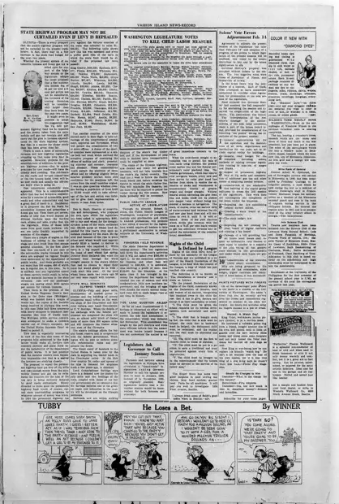

Paints Pictures with Fingers
访问原网页 ↗Visit original website ↗

S175 · Vashon Island News-Record / White Bluffs Spokesman；Library of Congress, Chronicling America · 1925-02-06
华盛顿州两家报纸在同日第3页刊载相同短讯，点名 Kwei Dun，并称他新近从亚洲抵达、随即在华盛顿大学注册，惯以手指代替笔画水墨。按一篇新闻处理。Two Washington newspapers printed the same brief on page 3, describing Kwei Dun’s recent arrival, enrollment at Washington and use of his fingers to draw in ink. The two copies are one report.
馆藏图像与原文Archived images and documents
- Vashon Island News-Record，1925年2月6日第3页Vashon Island News-Record, February 6, 1925, p. 3 I097
- White Bluffs Spokesman，1925年2月6日第3页White Bluffs Spokesman, February 6, 1925, p. 3 I098


原始网址Original URL
https://www.loc.gov/resource/sn87093323/1925-02-06/ed-1/?sp=3